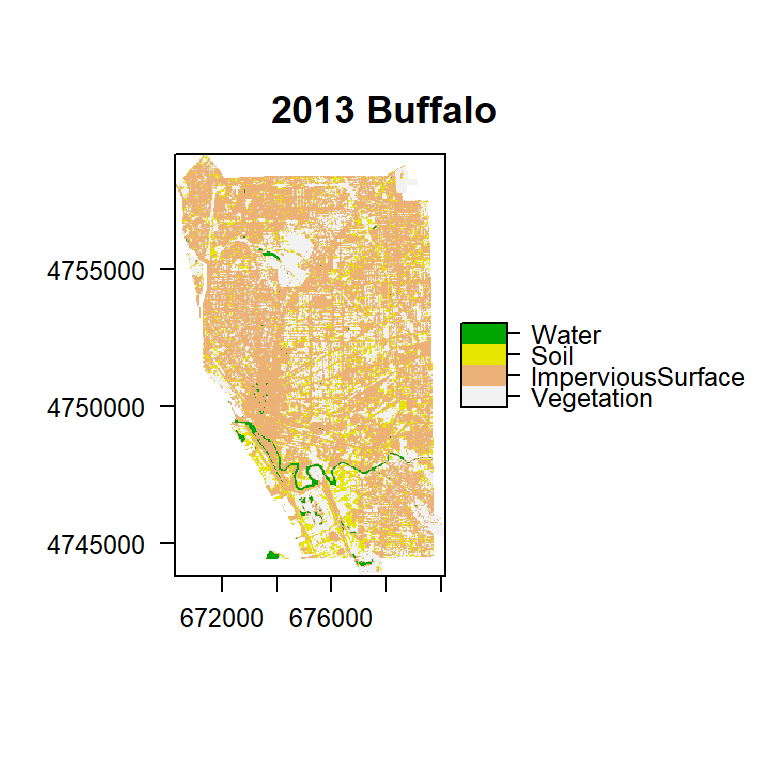

Buffalo Land Cover Mapping
Project for GEO 503
Ying Lu
Introduction
In order to trace the change and improve a city development, it is important for us to map the land use for cities. However, the update of land use images published by government is relatively slow for monitoring some small changes. The public of Landsat imagery offers us an opportunity to map land cover of cities using remote sensing methods. Nevertheless, the spatial characteristic for each city is not the same, the methods suitable for every city should not be the same. In order to get the most applicable classification method for Buffalo with Landsat imagery, three commonly used classification methods -Random Forest, Support Vector Machine and Maximum likelihood- were trained and tested in Buffalo with Landsat 8 images. Random Forest performed relatively better than other two. Therefore, the land use images in 2013, 2015, 2017 were also created with the trained Random Forest model. According to the result, impervious surface covers a great part of Buffalo, which is 59.34% in 2018. The temporal land cover maps of Buffalo show that Buffalo does not change a lot in the past 5 years. This study offers a good reference for land cover map for Buffalo city and give a general information of the change of the city.
Materials and methods
I used a Landsat 8 image in Buffalo in Augest 23, 2018 to map the landcover of Buffalo. The landcover of Buffalo was classified into four classes: vegetation, impervious surface, soil and water. There were three main steps for this study.
- The training and testing data were collected in the entire extent of the Landsat 8 image in Buffalo in Augest 23, 2018. ROI method in ENVI was used. Data was exported as
.shpfile. - Random Forest, Support Vector Machine and Maximum Likelihood were trained and tested using the entire Landsat image. According to the confusing matrix, Random Forest method was relatively better for Buffalo.
- The Landsat 8 image in 2013,2015,2017 with the low cloud coverage were downloaded from USGS explorer to map the land cover in Buffalo in those dates. A croase change of Buffalo were analyzed from those maps.
The packages required in this study was listed below (some packages may need to be installed):
library(getSpatialData)
library(sf)
library(maps)
library(rasterVis)
library(raster)
library(caret)
library(dplyr)
library(tidyr)
library(RStoolbox)
library(ggplot2)
library(googledrive)
#knitr::opts_chunk$set(cache=TRUE) # cache the results for quick compilingI used the getLandsat_data() function in getSpatialData package to download Landsat Level-1 imagery from AWS. However, in order to apply the trained model in 2018 to other years, the surface referance images are required, which should be applied from USGS earthexplorer. So, at last, I download all the data from USGS earthexplorer
The following code explains how to download Landsat date using getSpatialData package.
## set aoi and time range for the query
set_aoi(buffaloBoundary_union_cast[1,]$geometry)
time_range <- c("2018-08-23", "2018-08-23")
# Login to USGS ERS
login_USGS(username = "*****", password = "*****")
set_archive(dataDirectory)
# query for records for AOI, time range and product
query <- getLandsat_query(time_range = time_range)
# preview a record
getLandsat_preview(query[1,])
# download record 1 with level "l1" (will direct to AWS automaticaly)
files <- getLandsat_data(records = query[1,], level = "l1", source = "auto")
tilPath = files[[1]][grepl(".TIF$",files[[1]])]The Landsat 8 imagery in Augest 23, 2018 was used in this study. A fake color image of this image is posted below.
## googledrive auth state: inactive
## oauth app: tidyverse
## API key: set
## token: not loaded## File downloaded:
## * 2018LandsatImage.zip
## Saved locally as:
## * LandsatImage/HistoricalImage/2018LandsatImage.zipFig1.Landsat 8 image in Augest 23, 2018
In order to train the three methods in this study, labeled sample data are required. They were collected in ENVI use visual interpretation. The class of each region was labeled. Then, use the code below to get the spectral information in the Landsat image for each labeled point.
responseCol <- "CLASS_ID"
labeledPoints = data.frame(matrix(vector(), nrow = 0, ncol = length(names(landsetImage)) + 1))
for (i in 1:length(unique(labeledROI[[responseCol]]))){
category <- unique(labeledROI[[responseCol]])[i]
categorymap <- labeledROI[labeledROI[[responseCol]] == category,]
dataSet <- raster::extract(landsetImage, categorymap)
if(is(labeledROI, "SpatialPointsDataFrame")){
dataSet <- cbind(dataSet, class = as.numeric(rep(category, nrow(dataSet))))
labeledPoints <- rbind(labeledPoints, dataSet[complete.cases(dataSet),])
}
if(is(labeledROI, "SpatialPolygonsDataFrame")){
dataSet <- dataSet[!unlist(lapply(dataSet, is.null))]
dataSet <- lapply(dataSet, function(x){cbind(x, class = as.numeric(rep(category, nrow(x))))})
df <- do.call("rbind", dataSet)
labeledPoints <- rbind(labeledPoints, df)
}
}After the arrangement of sample data, the sample data were divided into two groups- 80% for training data and 20% for testing data. Then, the training data were used to training the three models: Random Forest, Support Vector Machine and Maximum likelihood.
trainList<-createDataPartition(y=labeledPoints$class,p = 0.8,list=FALSE)
training<-labeledPoints[trainList,]
testing<-labeledPoints[-trainList,]modFit_rf <- train(as.factor(class) ~ ., method = 'rf', data = training) #random forest
modFit_svm <- train(as.factor(class) ~ ., method = 'svmLinear', data = training) #svmLinear
model_mlc <- train(as.factor(class) ~ ., model = 'mlc', data = training) #Maxmum likelihoodAfter the training and testing of three models, the best one can be selected. The Landsat image in 2013,2015, 2017 and 2018 in Buffalo could be classified. Those Landsat images were clipped by the boundary of Buffalo city. The clipped 2018 image is as below:

Fig2.Landsat 8 image at Buffalo in 2018
After the clipping, Buffalo images were classified using the selected method. Then, the area of each land cover class was calculated to track the change of Buffalo.
Results
Random Forest, Support Vector Machine and Maximum Likelihood methods were trained and tested in this study. The confusion matrix of those methods were listed below.
## [1] "Random forest"## Reference
## Prediction Vegetation Impervious surface Soil Water
## Vegetation 500 0 0 0
## Impervious surface 0 361 0 0
## Soil 0 0 343 0
## Water 0 0 0 400## Accuracy Kappa AccuracyLower AccuracyUpper AccuracyNull
## 1.0000000 1.0000000 0.9977028 1.0000000 0.3117207
## AccuracyPValue McnemarPValue
## 0.0000000 NaN## [1] "Support Vector Machine"## Reference
## Prediction Vegetation Impervious surface Soil Water
## Vegetation 500 0 0 0
## Impervious surface 0 360 0 0
## Soil 0 0 343 0
## Water 0 1 0 400## Accuracy Kappa AccuracyLower AccuracyUpper AccuracyNull
## 0.9993766 0.9991623 0.9965314 0.9999842 0.3117207
## AccuracyPValue McnemarPValue
## 0.0000000 NaN## [1] "Maximum likelihood"## Reference
## Prediction Vegetation Impervious surface Soil Water
## Vegetation 500 0 0 0
## Impervious surface 0 361 0 0
## Soil 0 0 343 0
## Water 0 0 0 400## Accuracy Kappa AccuracyLower AccuracyUpper AccuracyNull
## 1.0000000 1.0000000 0.9977028 1.0000000 0.3117207
## AccuracyPValue McnemarPValue
## 0.0000000 NaNAccording to the confusion matrix and the overall accuracy, Random Forest was selected as a good method for landcover mapping for Buffalo. The classified map of Buffalo in 2013,2015,2017 and 2018 were posted in Fig.3.
 
According to the classfied maps, the change of every landcover class can be derived.
Fig4.Land cover change of Buffalo
Conclusions
This study test three classification method in mapping the land cover in Buffalo. It showed that Random Forest performed good when doing the coarse classisication. However, the change inside every land cover can not be detected with this method. Thus, more comprehensive methods are under requirement for the detail change detection.
References
[1] Mountrakis, G., Im, J., & Ogole, C. (2011). Support vector machines in remote sensing: A review. ISPRS Journal of Photogrammetry and Remote Sensing, 66(3), 247-259.
[2] Pal, M. (2005). Random forest classifier for remote sensing classification. International Journal of Remote Sensing, 26(1), 217-222.
[3]Strahler, A. H. (1980). The use of prior probabilities in maximum likelihood classification of remotely sensed data. Remote sensing of Environment, 10(2), 135-163.